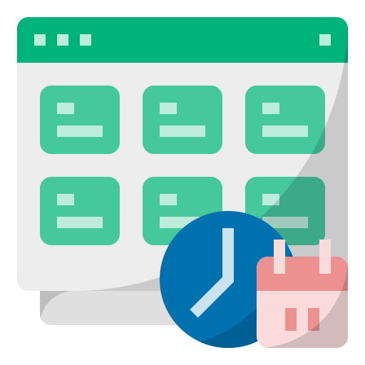
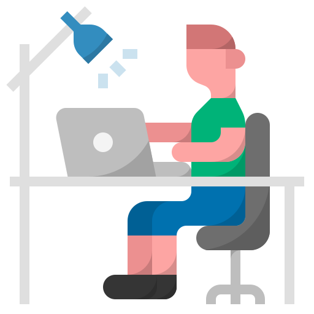
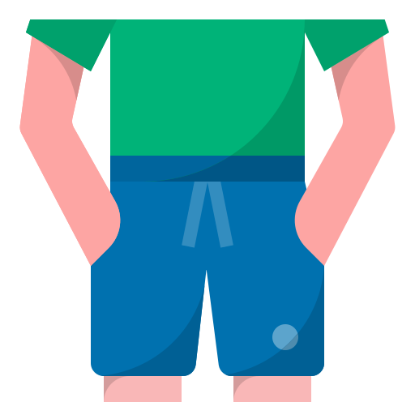

-

Деятельность
Начинающий Web-разработчик. Изучаю HTML5 & CSS3. Увлекаюсь чтением художественных и научнопопулярных книг. Интересуюсь информацией о создании и поддержании собственного бизнеса. Администрирую данный сайт.
-

Интересы
Интересуюсь компьютерами, операционными системами, автомобилями (конца девяностых, начала двухтысячных).
-
Любимая музыка
Музыку ради саморазвития не слушаю. Моя музыка подойдёт не каждому, поэтому желающие послушать предупреждены - значит вооружены. Ради саморазвития мне и книг с нужными материалами хватает.
Если не отпало желание, нажимай на ссылку (Яндекс.Музыка). -
Любимые фильмы
Прежде чем я усну (2013);
Леденец (2005);
Наркоз (2007);
Ошибка времени (2014);
Ловушка времени (2017);
Лучшее предложение (2013);
Обитель проклятых (2014);
Идентификация (2003);
Перелом (2007);
Охотники за головами (2011);
Не отпускай (2019);
Человек-невидимка (2020);
Побег из Претории (2020);
Тёмные воды (2019);
Платформа (2019);
В тихом омуте (2019);
Паразиты (2019);
Тёмное наследие (2020);
Вивариум (2019);
Законопослушный гражданин (2009);
Журналист (2016);
Калибр (2018);
Девушка в поезде (2016);
Неуправляемый (2010);
Экзамен (2009);
Урок окончен (2017);
Переводчики (2019);
Довод (2020);
В объятьях лжи (2018);
Разумное сомнение (2008);
Октябрьское небо (1999);
Звонок из прошлого (2020) (др. назв.: Звонок (2020));
Американский Палач (2019);
Марионетка (2020);
Девушка в подвале (2021);
Экстрасенсы (2015);
Шпионский мост (2015);
Посвященный (2014);
Матрица времени (2017);
Кислород (2021);
Мавританец (2021);
Треугольник (2009);
Дверь (2009);
Уровень 16 (2018);
Отель Мумбаи: Противостояние (2019);
Главный герой (2021);
Красивый, плохой, злой (2018);
Во время грозы (2018);
Отступники (2006);
Игра (1997);
Не говори никому (2006);
Остров проклятых (2009);
Мотылёк (2017);
Я – начало (2014);
Эквилибриум (2002);
Просто помиловать (2019);
Сериал "Радиоволна" (2016, 13 серий + эпилог);
Сериал "Тьма" (2017-2020, 3 сезона, 26 серий);
-
Любимые книги
Наполеон Хилл - Думай и Богатей (2019);
Максим Котин - И ботаники делают бизнес 1+2 удивительная история основателя "Додо Пиццы" Федора Овчинникова: от провала до миллиона;
Роберт Кийосаки - БОГАТЫЙ ПАПА, бедный папа;
Марк Менсон - Всё хреново;
Святослав Элис - Двери 520;
Антон Петряков - FRESH LIFE28 Как начать новую жизнь в понедельник и не бросить во вторник;
Марк - Менсон - Тонкое искусство пофигизма;
Олдос Хаксли - О дивный новый мир;
-

Любимые игры
Сейчас в основном не играю, просто я этот список категорий интересов позаимствовал у ВКонтакте^_^ - поэтому тут есть этот пункт. Могу игры, которые установлены у меня и они мне нравятся: Quantum Break, Watch Dogs (первая), GTA V.
-

Любимые цитаты
Ну эту цитату ты наверное видел на главной странице этого сайта, сходи туда ещё раз и посмотри. Она там красиво выглядит. Может здесь я её позже добавлю, просто надо CSS стили писать, HTML разметку делать. Сейчас есть более приоритетные задачи на момент написания этого текста, например спать. У меня просто два часа ночи четвертого октября 2020 года.
-

О себе
Меня зовут Эльмир. Я молодой, целеустремленный человек, уважающий друзей. Достаточно компанейский, наверное адекватный. В принципе пока что это всё, что я хочу сказать.